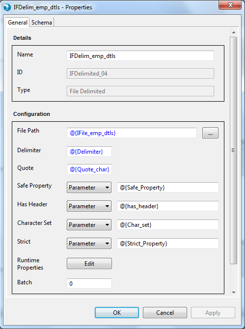
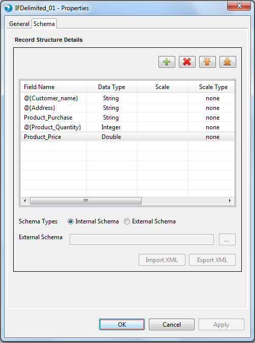
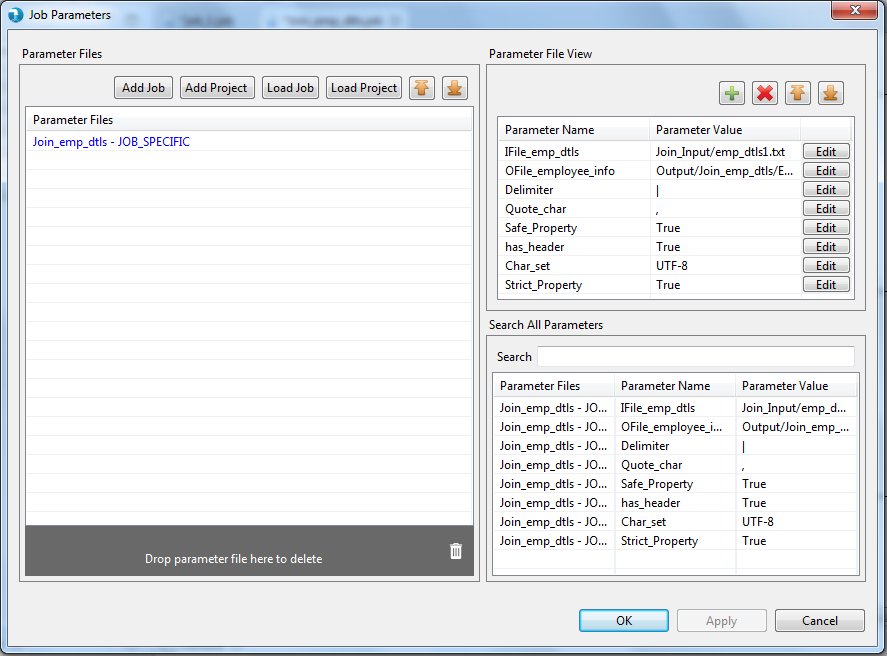
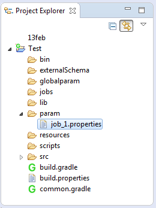
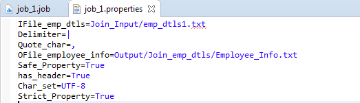

Generalizing Jobs
Generalization of jobs can be achieved through parameterization.Most of the properties can be parameterized in Hydrograph.
The parameter format that needs to be followed should be as below,
@{Parameter_Name}.
A parameter name can only contain combinations of "_" and alphanumeric values.
Also '@', '{','}' are the only special characters allowed in specific sequence for declaring a value as a parameter.
For instance, the image below depicts parameterization of some of the properties present in the General tab of the Input file delimited component.

Users can also parameterize field names under the schema tab. Naming conventions for parameterization are same as stated above.

Each parameter that is created by the user gets displayed on the Parameter Grid once user saves the job. Users can provide values to the parameters which get saved in a text file as key=value format.

Job parameters window above contains three sections
Parameter Files - This section list the properties file. Optionally, one may also create a properties file and browse it into the grid using below buttons,
Add project param file - to add project level parameter files
Add job param file - to add job level parameter files
Parameter File View - This section shows the contents of the file selected in the Parameter Files section. User can add/edit/delete the contents of the selected file.
Search All Parameters - This section lists all the available parameters from files listed in Parameter Files section. It also allows users to search for a particular parameter. Based on the search results user can validate the file name and value of the parameters.


Parameters once created can be used across a job at multiple locations wherever needed. e.g. Suppose all the Input/Output component in particular job needs to have the same value for "Is Header" property, then it can be achieved by parameterizing it.